皆様こんにちは、System Center サポートチームの 石原 です。
今回は、SCVMM に更新プログラムのロールアップ (UR：Update Rollup) を適用する手順について説明します。
更新プログラムのロールアップ (UR：Update Rollup) について
本記事の公開日時点 (2023/11/20) でサポートが有効な System Center Virtual Machine Manager（以後 SCVMM）には SCVMM 2016, SCVMM 2019, SCVMM 2022 の 3つのバージョンがあります。
各々のバージョンの初期公開時のモジュールを一般公開版 (GA：General Availability) と呼びます。一般公開版のリリース後、機能追加や不具合修正、セキュリティ対策等の更新プログラムは、更新プログラムのロールアップ (UR：Update Rollup) として提供されます。そのため、SCVMM を最新の状態に維持するためには、更新プログラムのロールアップを適用いただく必要があります。
各々のバージョンの 更新プログラムのロールアップのリリース状況は以下サイトをご参照ください。
・SCVMM 2022： System Center Virtual Machine Managerのビルド バージョンをリリースする | Microsoft Learn
・SCVMM 2019： System Center Virtual Machine Managerのビルド バージョンをリリースする | Microsoft Learn
・SCVMM 2016： System Center Virtual Machine Managerのビルド バージョンをリリースする | Microsoft Learn
なお、セキュリティ対策以外の更新プログラム (機能追加や不具合修正) は、原則、メインストリーム サポート期間中 (SCVMM 2022, SCVMM 2019 ※2023/11/20 時点) の製品に対して提供されます。延長サポート期間中 (SCVMM 2016 ※2023/11/20 時点) の製品には、セキュリティ対策の更新プログラムのみが提供されます。
各バージョンのサポート状況につきましては以下のサイトをご参照ください。
・System Center 2022 Virtual Machine Manager - Microsoft Lifecycle | Microsoft Learn
・System Center 2019 Virtual Machine Manager - Microsoft Lifecycle | Microsoft Learn
・System Center 2016 Virtual Machine Manager - Microsoft Lifecycle | Microsoft Learn
また、メインストリーム サポート期間や延長サポート期間の説明につきましては、固定ライフサイクル ポリシーのサイトをご参照ください。
更新プログラムのロールアップ (UR：Update Rollup) の適用手順
今回は、SCVMM 2022 に本記事の公開日時点で最新の UR2 を適用する手順をご紹介します。
SCVMM の更新プログラムのロールアップは累積型のため、順番に適用する必要はありません。常に最新の更新プログラムを適用できます。一般公開版の SCVMM 2022 を導入し、更新プログラムのロールアップを適用したことがない場合でも、利用可能な最新の更新プログラム (今回の場合は UR2) を適用することができます。
UR の適用の際には、Virtual Machine Manager 2022 ビルド バージョン の表の KB 列のリンクをクリックして、最新の更新プログラム ロールアップのサイトに進みます。
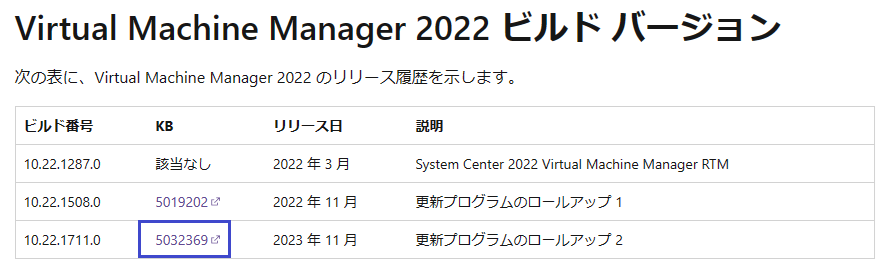
更新プログラム ロールアップのサイト(SCVMM 2022 UR2) には、更新プログラムの内容（機能追加、不具合修正、セキュリティ対策）とモジュールのダウンロード方法、インストール手順が記載されています。
● ステップ１：モジュールをダウンロードする
① ～ ③の 3つのモジュールをダウンロードします。
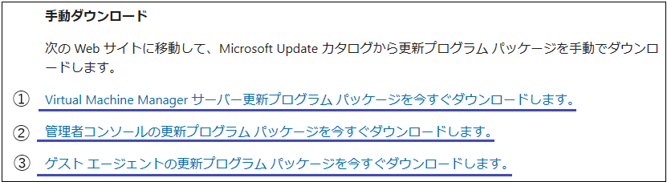
① Virtual Machine Manager サーバー更新プログラム パッケージ (kb5032369_vmmserver_amd64_***.cab) をダウンロードします。
ダウンロードファイルしたファイルを展開します。※展開後のファイル：kb5032369_vmmserver_amd64.msp
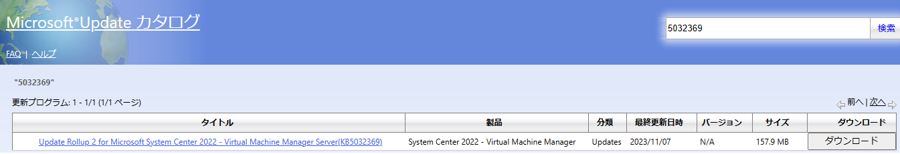
② 管理者コンソールの更新プログラム パッケージ (kb5032370_adminconsole_amd64_***.cab) をダウンロードします。
ダウンロードファイルしたファイルを展開します。※展開後のファイル：kb5032370_AdminConsole_amd64.msp
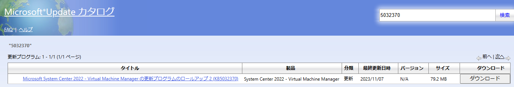
③ ゲスト エージェントの更新プログラム パッケージ (kb5032371_vmmguestagent_amd64_***.cab) をダウンロードします。
ダウンロードファイルしたファイルを展開します。※展開後のファイル：kb5032371_vmmGuestAgent_amd64.msp
● ステップ２：コマンドプロンプトを管理者で起動して、以下の順でモジュールを実行します。
※ コマンドプロンプトを管理者として起動 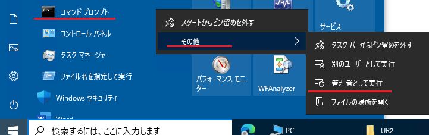
【実行の順番】
- SCVMM 管理サーバー用モジュール kb5032369_vmmserver_amd64.msp
- SCVMM コンソール用モジュール kb5032370_AdminConsole_amd64.msp
- SCVMM エージェント用モジュール kb5032371_vmmGuestAgent_amd64.msp
実行コマンド結果の画面ショットは以下の通りです。
SCVMM 管理サーバー用モジュール (kb5032369_vmmserver_amd64.msp)
＞ msiexec.exe /update kb5032369_vmmserver_amd64.msp 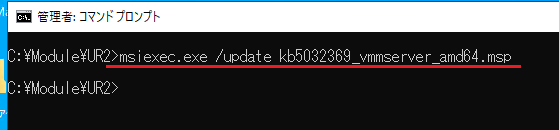SCVMM コンソール用モジュール (kb5032370_AdminConsole_amd64.msp)
※ SCVMM 管理サーバーのほか、SCVMM コンソールを導入した全てのサーバーで実行します。
＞ msiexec.exe /update kb5032370_AdminConsole_amd64.msp 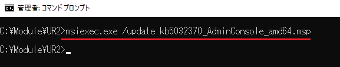SCVMM エージェント用モジュール (kb5032371_vmmGuestAgent_amd64.msp)
※ エージェントサーバーで実行します。
＞ msiexec.exe /update kb5032371_vmmGuestAgent_amd64.msp 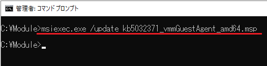
※ SCVMM エージェントの更新は、モジュールを実行する代わりにSCVMM コンソールから UR2 へ更新することも可能です。 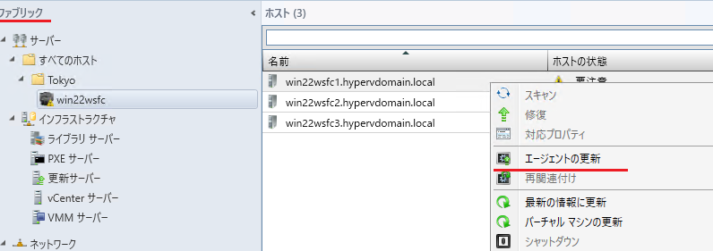
● ステップ３：適用状況を確認します。
SCVMM コンソールから各コンポーネントのバージョンを確認することができます。
SCVMM 2022 UR2 のバージョンは [10.22.1711.0] です。
■ SCVMM コンソール 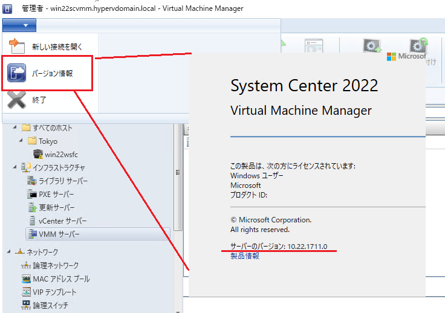
■ SCVMM 管理サーバー 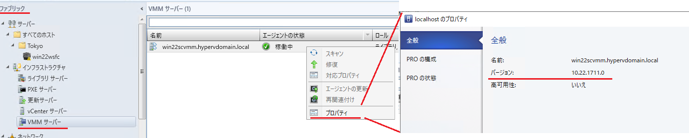
■ SCVMM エージェント 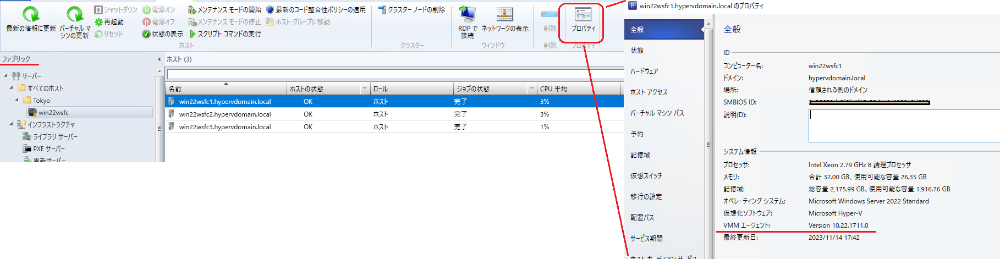
高可用性 VMM 管理サーバーを構成している場合
複数台の SCVMM 管理サーバーで高可用性 VMM 管理サーバーを構成している場合、全ての SCVMM 管理サーバーで SCVMM 管理サーバー用モジュール と SCVMM コンソール用モジュールを適用する必要があります。適用の順番は、待機系の SCVMM サーバーから適用します。
【実行の順番】
- 待機系の SCVMM 管理サーバーにて SCVMM 管理サーバー用モジュール と SCVMM コンソール用モジュールを適用
- フェールオーバー クラスターマネージャーで稼働系を待機系に切り替え （※1）
- 待機系に切り替わった元稼働系サーバーに SCVMM 管理サーバー用モジュール と SCVMM コンソール用モジュールを適用
※1 SCVMM の稼働系の切り替え方法
SCVMM の稼働系はフェールオーバー クラスターマネージャーの役割画面で移動することで切り替えることができます。
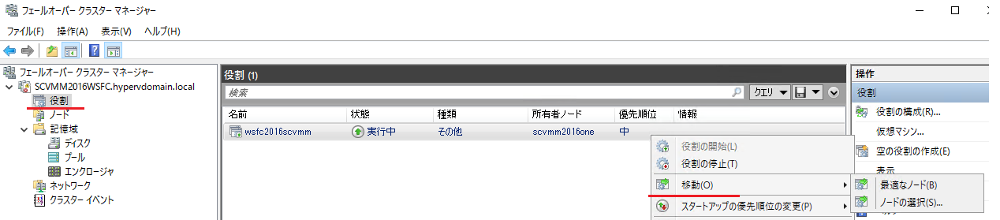
UR 適用時の OS 再起動の可能性について
UR の適用では、基本的には SCVMM 管理サーバーや管理対象のホストサーバーの再起動は発生いたしません。ユーザー様からの事例報告でも OS 再起動はほとんど確認しておりません。
ただし、仕組み上は OS 再起動が発生する可能性があります。
UR のモジュールは、Windows インストーラ形式のファイル ( msp/msi ファイル) にて提供されます。msp/msi インストーラを使用したインストール/アンインストールの挙動として、実行時に置き換えが必要なファイル等が他プロセスによりハンドルを保持されていて置き換えできない場合、一度 OS 再起動を試行してファイルの置き換えを実施します。 そのため、この仕様にあたる状況となった場合に OS 再起動が発生する可能性があります。
下記公開情報に記載の通り、基本的にはアプリケーション単位でシャットダウンして、システム全体 (OS) のシャットダウンにつながらないような考慮になっておりますが、可能性という意味では発生し得る点をご認識ください。
参考：再起動マネージャーでの Windows インストーラーの使用
https://learn.microsoft.com/ja-jp/windows/win32/msi/using-windows-installer-with-restart-manager
SCVMM の UR 適用手順は以上の通りです。
本手順を参考に SCVMM を常に最新の状態にてご利用いただけますと幸いです
※本情報の内容（添付文書、リンク先などを含む）は、作成日時点でのものであり、予告なく変更される場合があります。